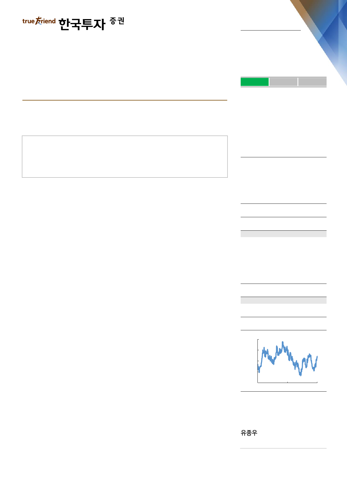

실적 Review
2019. 7. 26
SK하이닉스(000660)
하 회
부 합
영업이익의 컨센서스 대비를 의미
상 회
모바일, PC 디램 수요 회복 확인. 서버디램만 남았다
2분기 서버디램 수요 부진으로 디램 bit growth 가이던스 하회
낸드 수요는 가격하락에 따른 회복세 강해
Hyperscaler 설비투자 회복으로 하반기에는 서버디램 수요도 회복 전망
Facts : 2분기 낸드가격 하락폭 예상보다 커 영업이익 추정치 하회
2분기 영업이익은 6,376억원으로 컨센서스와 우리 추정치를 하회했다. 서버디램
수요부진으로 디램 bit growth가 소폭 낮았고 제품 믹스 악화로 낸드 ASP 하락폭
이 25%로 당초 예상보다 컸기 때문이다. 디램 bit growth가 예상보다 낮았던 이
유는 서버디램 수요가 부진했기 때문이다. 하지만 모바일과 PC디램 수요는 회복
중이다. 모바일디램은 스마트폰 수요의 부진에도 불구하고 가격하락에 따른 채용
량 회복이 나타나고 있고, PC디램은 윈도우10 교체와 PC용 CPU 공급부족 해소
로 PC수요가 회복되면서 같이 수요가 회복되고 있다. 하반기에도 수요회복세는
지속될 전망이다. 모바일과 PC디램 수요회복과 더불어 서버디램의 수요도 점진적
으로 회복할 것이다.
Pros & cons : 2019년 디램 bit growth 하향
2019년 디램 bit growth 가이던스를 서버디램의 수요부진을 반영해 당초 10%
중후반에서 10% 초중반으로 하향했다. 상반기 서버와 PC디램 수요가 전년대비
역성장을 하면서 2019년 연간 디램수요 증가율도 13%로 2018년 15%에서 다시
낮아질 전망이다. 2017년 디램 수요증가율은 22%였다. 하지만 수요증가율은
2019년 1분기를 저점으로 점차 회복되고 있고, 낮아진 수요증가율에 맞춰 공급조
절을 계획하고 있어 디램 수급은 점차 개선되고 있다.
Action : 이제 고정가격 상승을 기다리자. 목표주가 100,000원 유지
디램 ASP는 3분기 -12%, 4분기 -5%로 4분기부터 하락폭이 크게 줄어들기 시
작해 SK하이닉스의 실적도 3분기를 저점으로 개선될 것이다. 낸드 가격도 3분기
부터 안정화되면서 적자폭 축소가 시작될 것이다. 지금까지 메모리 현물가격 반등
이 주가상승을 이끌었다면 이제는 고정가격 회복이 주가상승의 모멘텀을 제공할
것이다. 2020년 연간 영업이익은 7.1조원으로 2019년 대비 153% 증가할 전망
이다. 내년 메모리업체의 설비투자 규모도 다시 감소해 공급증가율은 낮게 유지되
고 수급개선이 지속될 것이다. 메모리 사이클은 저점을 지났다.
매수(유지)
목표주가: 100,000원(유지)
Stock Data
KOSPI(7/25)
주가(7/25)
시가총액(십억원)
발행주식수(백만)
52주 최고/최저가(원)
일평균거래대금(6개월, 백만원)
유동주식비율/외국인지분율(%)
주요주주(%) SK텔레콤 외 2 인
국민연금공단
2,074
79,200
57,658
728
86,300/57,700
248,632
73.5/51.4
20.1
9.1
Valuation 지표
PER(x)
PBR(x)
ROE(%)
DY(%)
EV/EBITDA(x)
EPS(원)
BPS(원)
2018A
2.7
0.9
38.5
2.5
1.4
22,255
67,794
2019F
23.7
1.1
4.8
1.9
4.8
3,344
69,434
2020F
10.5
1.1
10.3
2.5
3.1
7,524
74,531
주가상승률
절대주가(%)
KOSPI 대비(%p)
1개월
18.7
21.0
6개월
6.2
10.9
12개월
(1.6)
7.1
주가추이
(원)
98,000
86,000
74,000
62,000
50,000
Jul-17
자료: FnGuide
Jul-18
Jul-19
jongwoo.yoo@truefriend.com